k-Day 040｜鴻門宴
昨晚把二十三號停在樓下餐廳的角落，下樓時老闆已經醒了。坐在桌邊喝咖啡，欣賞著車上的行李和漂亮的把手弧度。
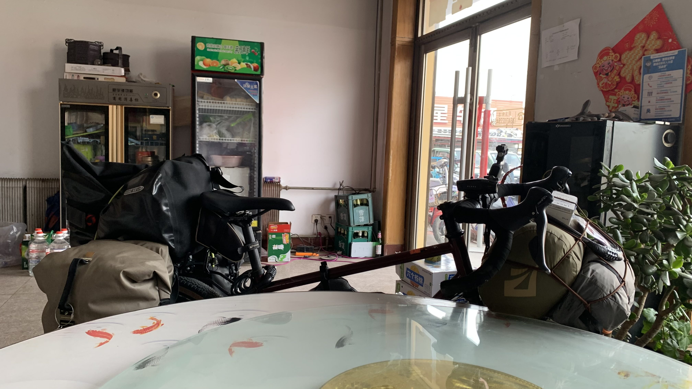
出門時剛好遇到垃圾清運時間，看來是普通的小貨車，播放的也是沒聽過的歌曲。經過時兩旁的住戶會把垃圾拿出來丟到車上。
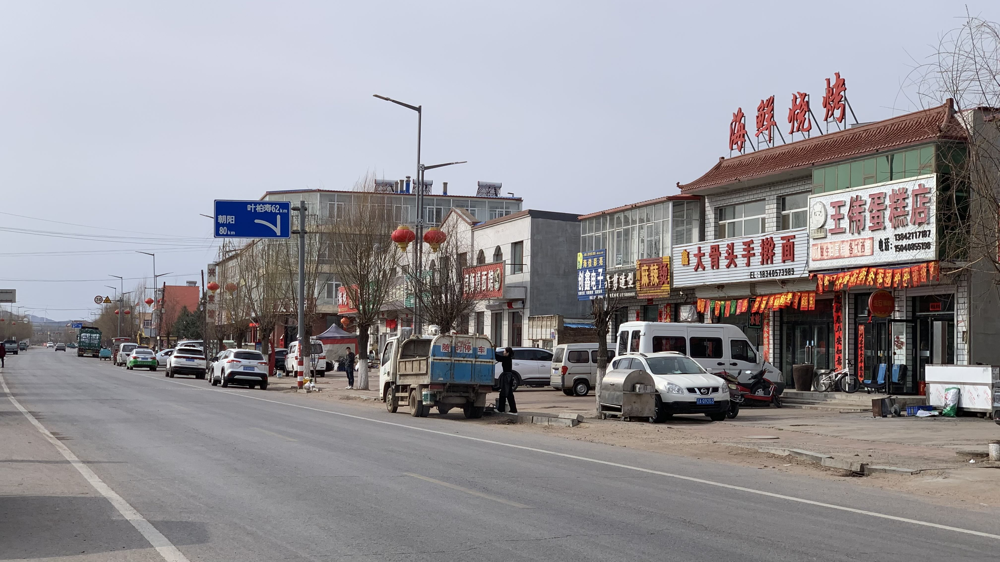
近日進度頗快，昨晚的人車合一保留了下來。變速順暢到我懷疑朝陽老闆給了我另外一輛車。
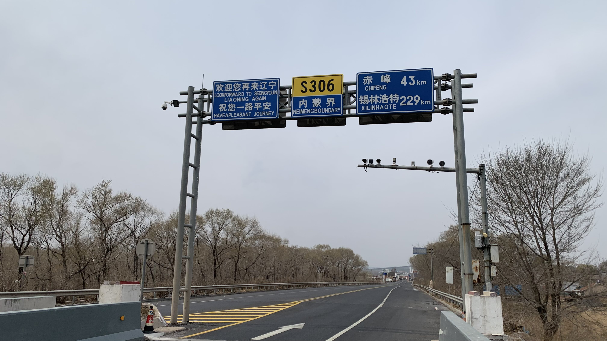
因為繞了一點路，昨天本來已從朝陽過內蒙邊界，現在又走了一次。
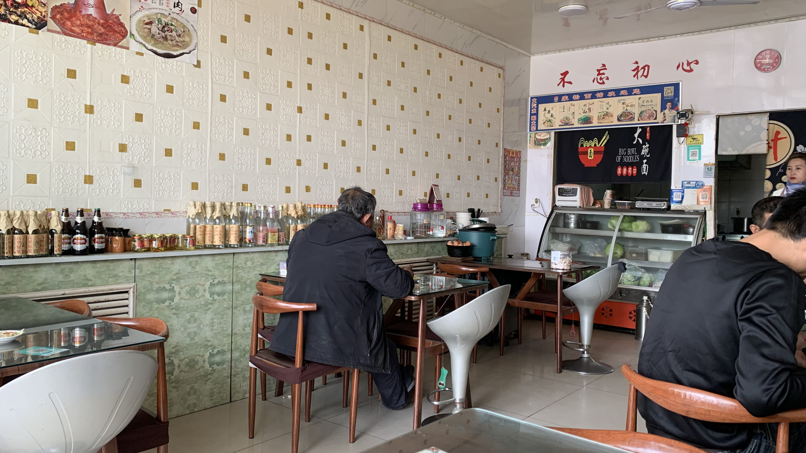
中午吃了餃子館，肉餡已經比遼寧吃到的飽滿，但是面皮仍然少了一些彈性。老闆在招呼進門的客人時會先提到客人的住處和職業，證明自己還記得這位客人，相當在地。
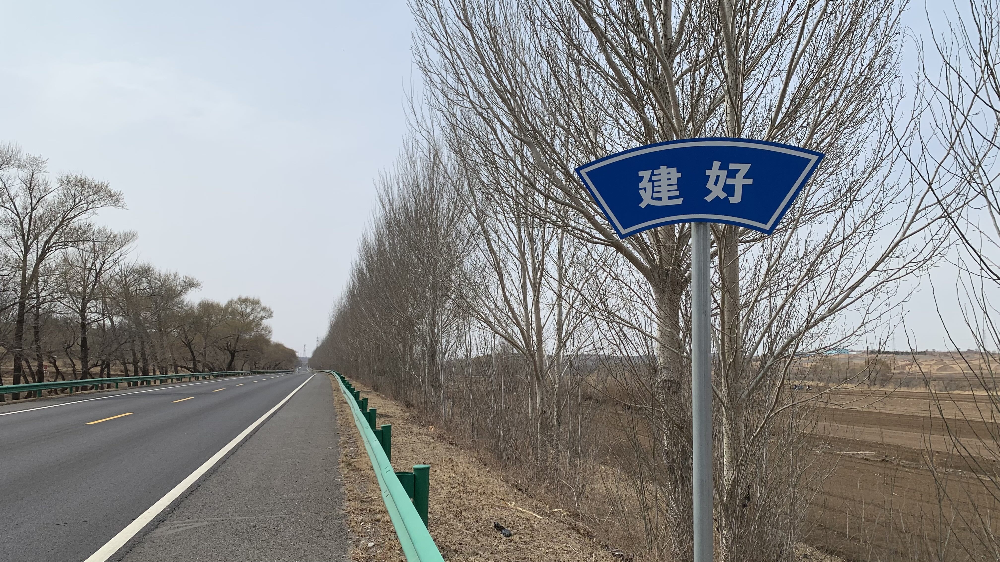
經過這告示牌的時候還不知道是什麼意思。
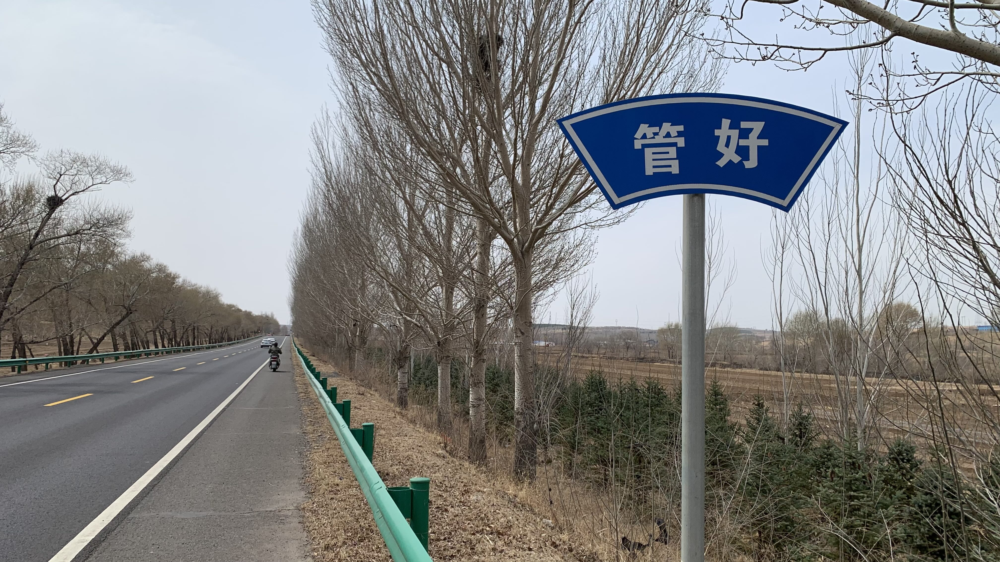
再騎一段路，看到管好，就覺得幽默了。
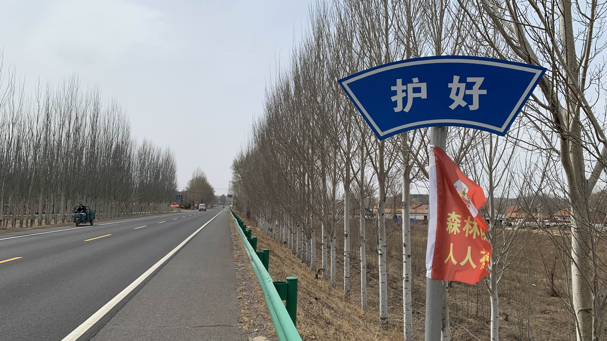
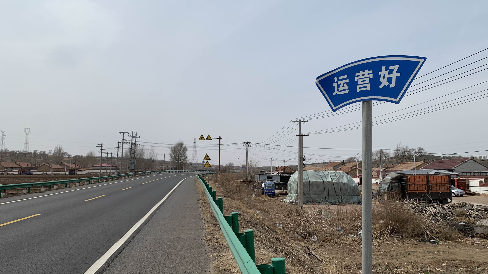
這四個是一組的，在今天的路上反覆出現。究竟做給誰看呢？
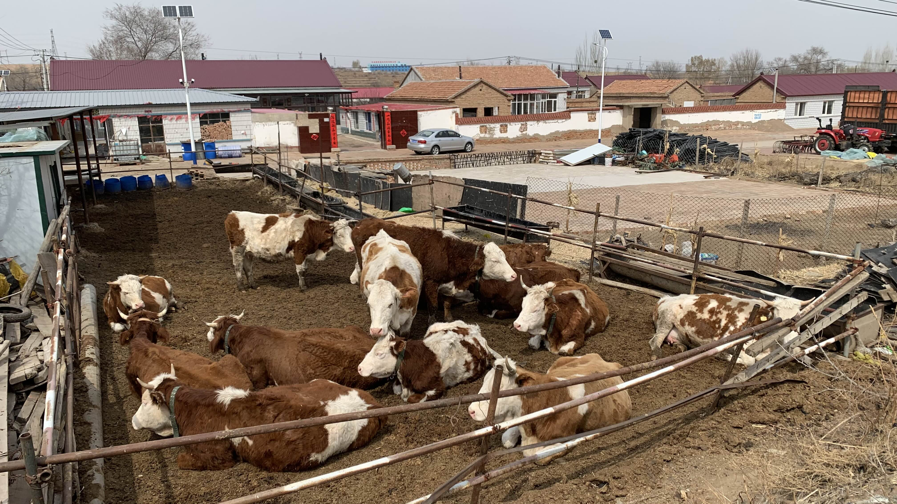
從遼寧到內蒙，看到許多養牛人家，這一戶的牛是最乾淨健康的。
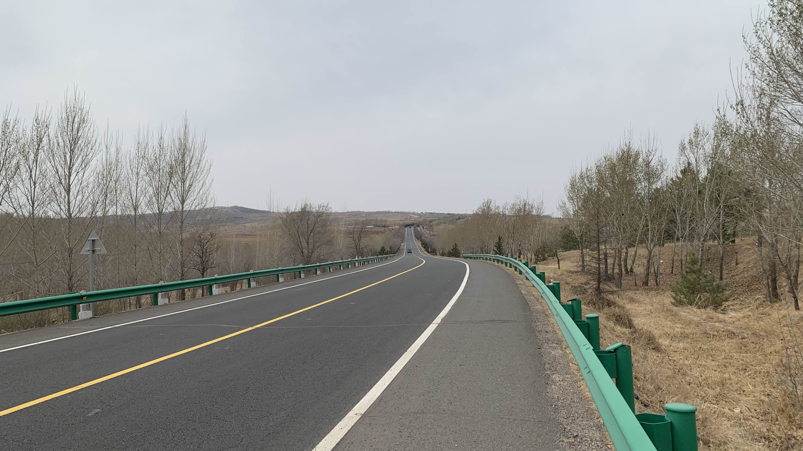
我開始懷疑此處的超商老闆有預言體質。
今天雖然一路上坡下坡，早上老闆和我說了一路順風後，驚人地迎來一整天的順風。騎著長上坡，卻覺得有人在背後推著我。
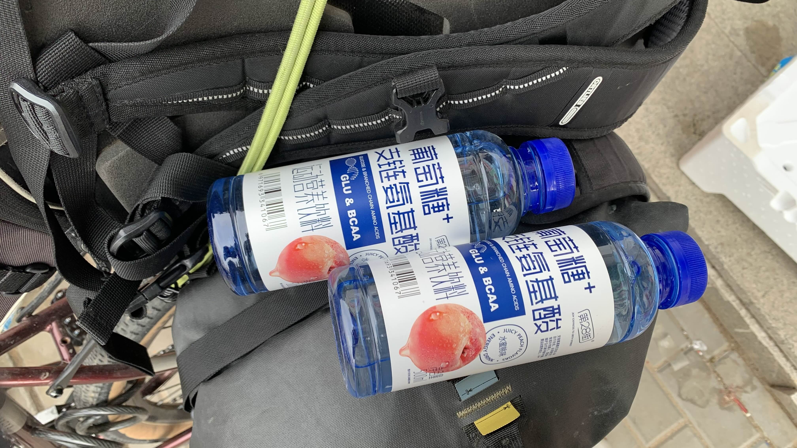
下午兩點不明究理的就抵達赤峰。在超商買了兩瓶沒見過的飲料，不甚美味。
剛剛一路飆車過來，右側踏板不知為何會在重踩時出現嘎吱聲，決定先到星巴克休息一下，搜尋當地車行和住宿資訊。
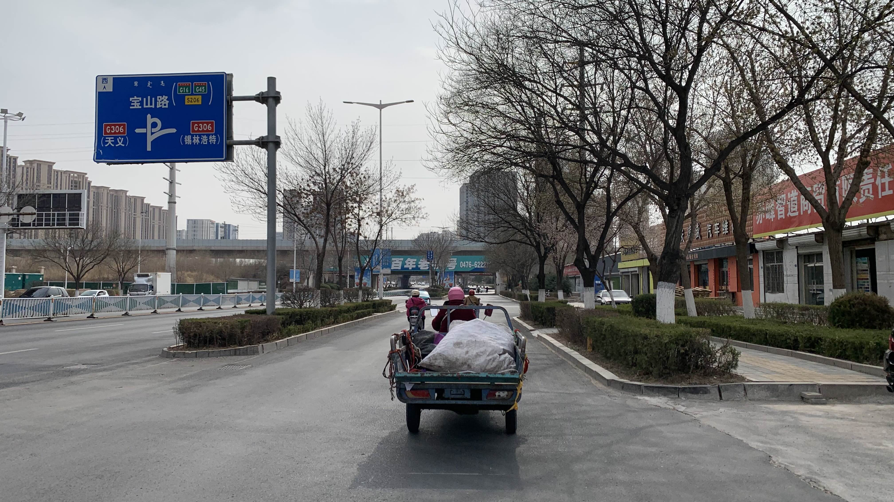
跟著這輛三輪車大搖大擺進入市區，此處交通環境良好，沒有闖紅燈、隨意按喇叭的人。道路兩旁廣設垃圾桶，環境維持得相當整潔。
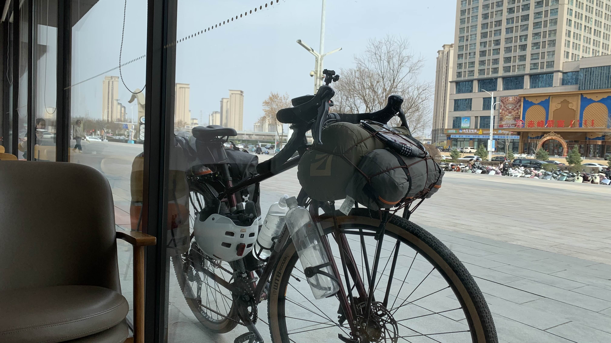
必須說，這間星巴克是一路以來唯一稱得上星巴克的分店。前幾次喝的抹茶拿鐵跟水一樣，店員也在上班時間蹲在角落大咧咧地滑手機。這間分店不僅服務良好，座椅舒適，咖啡還有拉花。
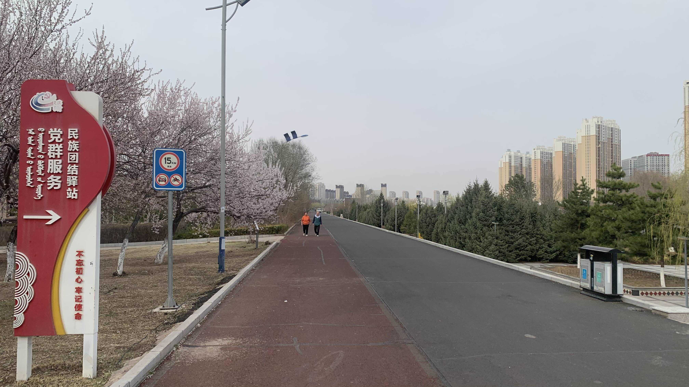
找到河邊最近的一間自行車行，看來規模頗大。沿著車道走，確實是規劃良善的城市。
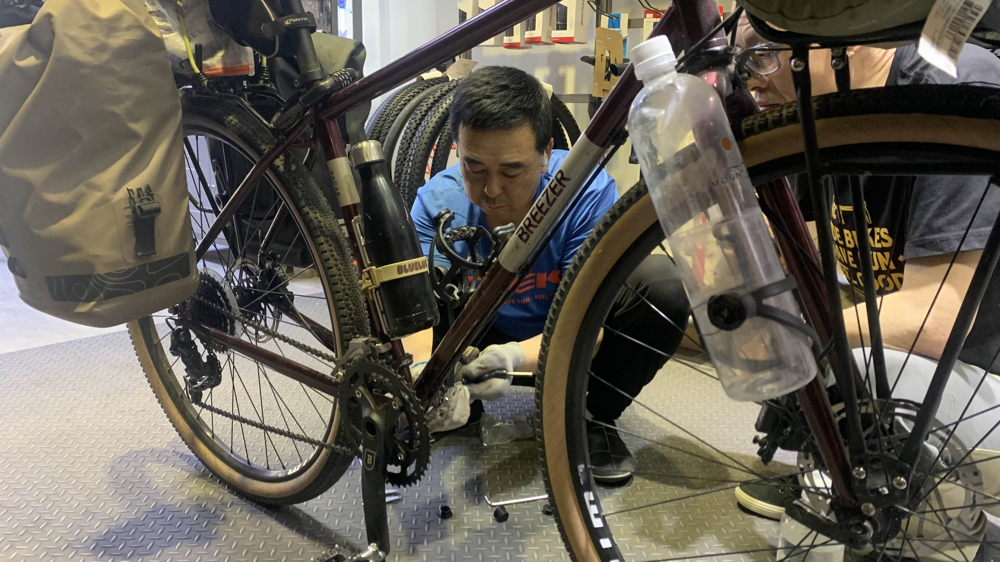
一進店裡，有專業的技師，發現右側的蓋子掉了，因此踏板踩久會有縫隙，立刻到另一間分店幫我找到零件安裝上去。
詢問維修價格，一旁的老闆建議我把車先放在這裡，跟我說明天要去參觀博物館逛市區，帶著這輛車不方便。他可以借我一輛小折，等明天參觀完再回來牽車。
雖然心裡有些顧慮，但這麼大間店，應該也不會有失竊問題。答應將車停在這裡後，老闆說帶我去吃當地特色的涮羊肉。
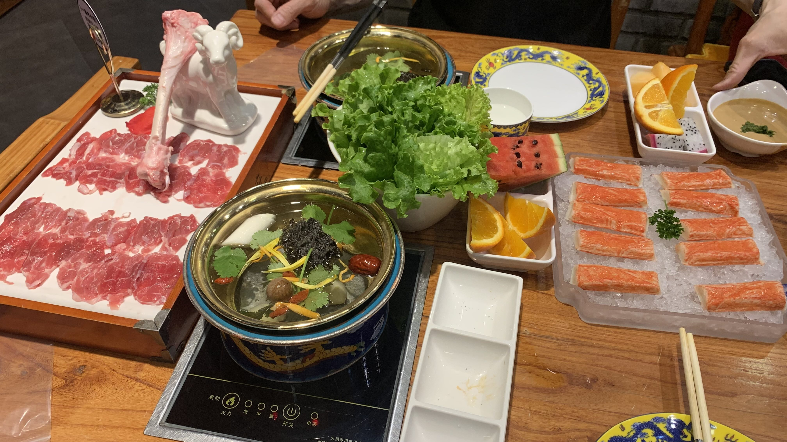
前往餐廳時心裡的警鈴響起，期間老闆不段拿手機拍攝，並對著鏡頭介紹。看來是想拍個幫台灣同胞修車，並熱情接待的視頻。
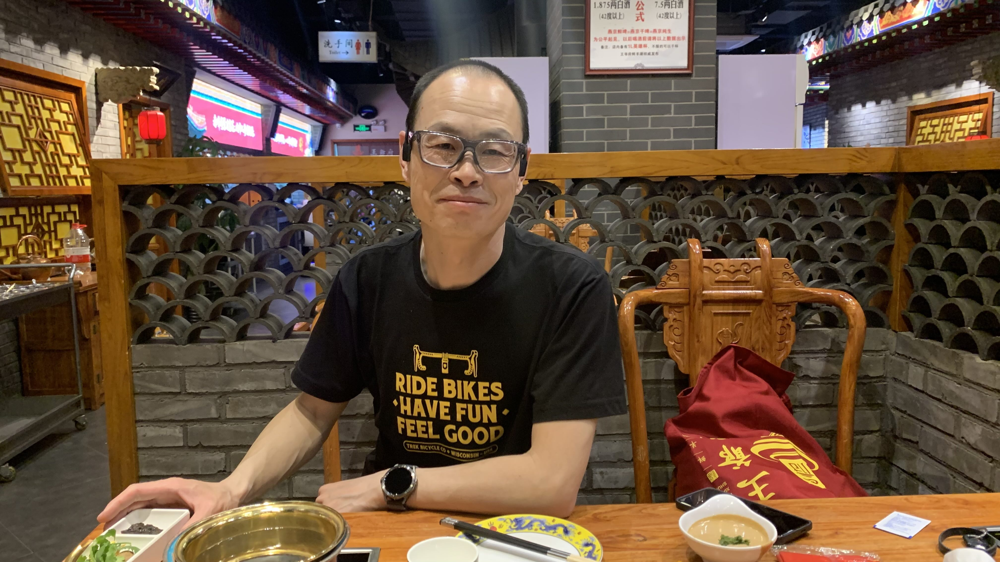
吃飯時老闆有意無意詢問我的車有沒有做過保養，我說在日本買的時候他們很專業，都有做過，並提到朝陽老闆幫我免費修好變速後，現在的狀態已經是最優秀的，沒有任何問題。
他於是轉而詢問有沒有哪些配件，要幫我調整優化。
這可不妙，立刻反問他：「剛剛踏板問題不是修好了嗎？我覺得騎起來沒很好，你看有什麼問題嗎？」
老闆說：「我剛剛也沒看，要明天看了才知道有沒有問題。」
「我以前車子被弄壞過，花了更多錢才好不容易修好，調整需要很精密的設備，我覺得現在沒啥問題，而且我也沒有很多預算。」現場跟老闆直說了，希望不要亂動二十三號。
「我們當然不會強買強賣，你跟我們這樣的車行可以放心，跟其他一般人就得小心一點。」
吃飯期間就這樣一來一往的試探，老闆最後說：「你後天出發的時候，從我店裡出發，我跟你騎一段。」
看來老闆不只想拍幫台灣旅人修踏板吃飯的視頻，還想做完一整套，讓我從店裡啟程。
騎了四十天終於進入人車合一的狀態，可別被亂搞了。預感問題會很大，實在不該隨便把車留在店裡，決定明天一早就去把車接回來。
今日花費： 水2、咖啡 5、星巴克 29、電解水 10、住宿80元